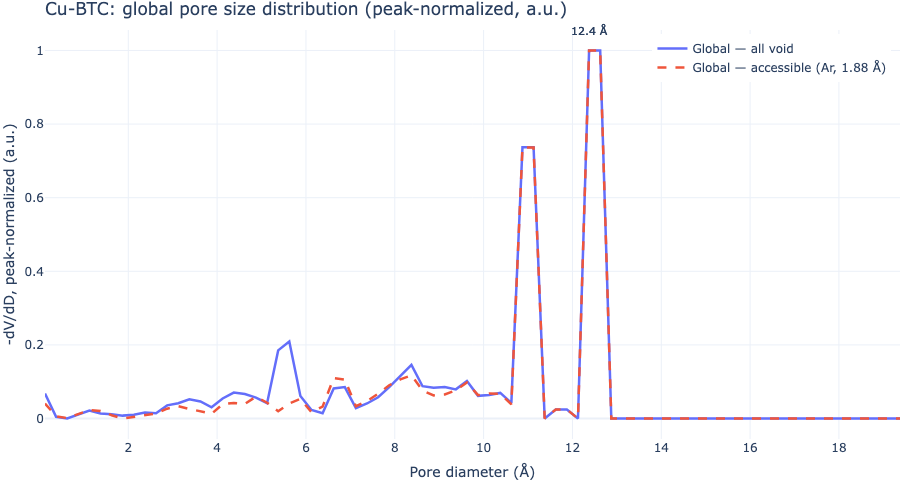
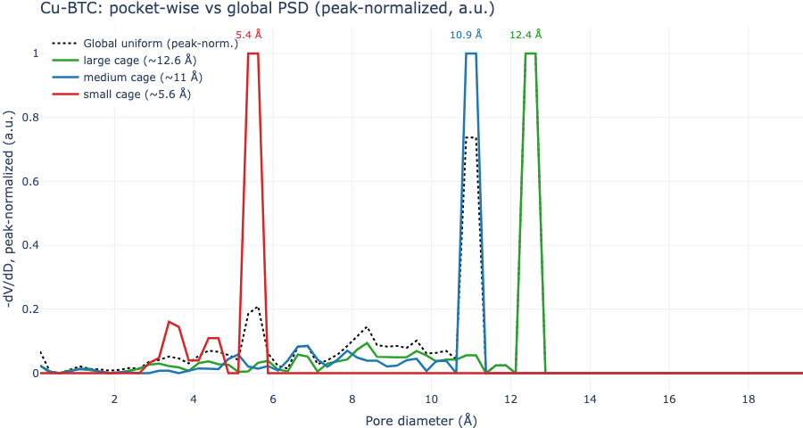
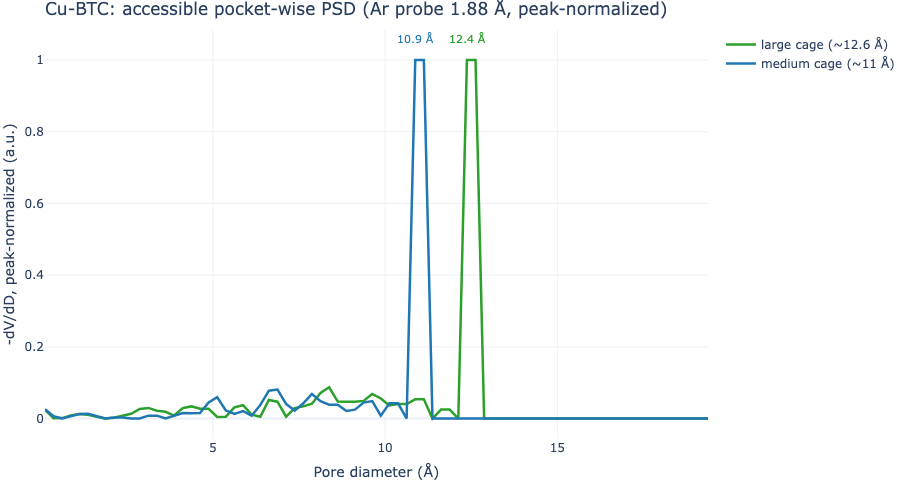

Gelb–Gubbins pore size distributions on Cu-BTC (HKUST-1): peak-normalized global vs pocket-wise sampling, and total void vs probe-accessible void.
Overview
Global textural properties such as largest cavity diameter, pore limiting diameter, and pore size distributions (PSDs) are easy to compute but can hide distinct pockets and network topology behind one curve. Mofography segments void space into pockets and can report the same Gelb–Gubbins histogram per pocket, so local cage sizes are visible instead of being washed out by volume-weighted sampling.
A PSD starts from largest-including-sphere diameters (Gelb & Gubbins): at each sample site in the void, mofography finds the largest sphere that contains the site without overlapping framework atoms. The sphere radius at the center equals the distance-grid value there; the reported size is the diameter (2× radius).
Two sampling strategies matter:
Global (uniform) PSD — compute_psd_uniform_rust draws a fixed total number of points uniformly in the unit cell. Large cages dominate by volume, so small pocket families are undersampled and may not appear as peaks.
Pocket-wise PSD — compute_psds_pocketwise_rust draws a fixed number of samples per segmented pocket (regions_pbc). Each pocket gets equal statistical weight. This is the PSD that feeds pocket typing via enrich_segmentation_with_pocket_psds (see Pocket detection).
Accessibility at a probe radius uses the same winding percolation as accessible surface area: only void that percolates through the pore network at that probe size counts as accessible. Total PSDs use all void; accessible PSDs drop pockets (or void fragments) that do not percolate.
This page uses Cu-BTC (P1-Cu-BTC.cif), which has three cage families (~5.6, ~11, and ~12.6 Å peaks in the paper). IRMOF-1 is a poor teaching example here: its two cage peaks are close in size and global vs accessible curves barely differ at helium probe size.
Choosing num_samples_per_region, bins, and max_diameter
num_samples_total (global) and num_samples_per_region (pocket-wise) control Monte Carlo noise, not physics. More samples → smoother curves; 800–8000 is usually enough for tutorials.
max_diameter should exceed the largest void radius in the structure (check dgrid.max() × 2). Cu-BTC cages stay below ~15 Å; we use 20 Å (PoreBlazer’s default).
binsize sets the PSD resolution. We use 0.25 Å, PoreBlazer’s default, so curves compare directly with PoreBlazer; finer bins sharpen peaks but make the (-V/D) derivative noisier and need more samples.
How the curve is calculated
The sampling gives a list of pore diameters (D_s) (one per sample point). The plotted curve is the Gelb–Gubbins PSD, computed exactly like PoreBlazer so results compare one-to-one:
Cumulative pore volume. With bins of width () (0.25 Å), the fraction of the void whose largest-including sphere has diameter at least (D_k = k) is [ V(D_k) = , V()=1 . ]
Derivative. The PSD is the negative derivative of this cumulative curve, by a central difference, [ (D_i) = -|_{D_i} -, ] reported at the bin centre (D_i = i- /2) (PoreBlazer’s convention).
Peak normalisation. Each curve is divided by its own maximum, (/), so the y axis is in arbitrary units and curves from different samplers or materials share a scale.
mgr.psd_gelb_gubbins(counts, binsize) implements steps 1 and 2 and is unit-tested against a direct port of PoreBlazer’s pore_distribution. The pocket-wise PSD applies the same transformation to the diameters sampled inside each pocket.
Imports and settings
Show code
import loggingimport numpy as npimport plotly.graph_objects as goimport mofography as mgrfrom mofography.cif_io import read_cif_to_aselogging.getLogger("mofography").setLevel(logging.WARNING)num_samples_total =50000# global sampler (paper-style)num_samples_per_region =5000# per pocketmax_diameter =20.0binsize =0.25# PoreBlazer default bin width (Å)bins = np.arange(0, max_diameter + binsize /2, binsize)def gelb_gubbins(counts):"""Diameter histogram -> -dV/dD (the Gelb-Gubbins curve), peak-normalized (a.u.).""" _, y = mgr.psd_gelb_gubbins(counts, binsize) m = y.max()return y / m if m >0else y# diameters (Å) that the -dV/dD values belong to (interior bins)x_gg, _ = mgr.psd_gelb_gubbins(np.ones(len(bins) -1), binsize)def peak_diameter(y, x=x_gg):returnfloat(x[int(np.argmax(y))])
The sampling helpers return histograms of diameters. The curve in the paper (and in PoreBlazer’s Total_psd.txt) is not that histogram but the Gelb–Gubbins PSD, (-V/D): build the cumulative pore volume (V(D)) from the samples, normalise it to 1 at (D=0), and take its central difference with the same 0.25 Å bins as PoreBlazer. mgr.psd_gelb_gubbins(counts, binsize) does this conversion. We then divide each curve by its own maximum (arbitrary units), exactly as in the paper figure, so curves from different samplers are comparable and the results can be compared one-to-one with PoreBlazer.
C288H96Cu48O192: 624 atoms
Cell (Å): [26.34 26.34 26.34]
dgrid (53, 53, 53), max void radius 6.30 Å
PBC pockets: 16 | PBC groups: 16
return_dgrid=True keeps dgrid inside seg; accessible PSD helpers also need window connections for percolation.
Step 2: Pick a probe radius for accessibility
We sweep probe radii and count PBC-complete pocket groups that still percolate (via compute_accessible_psd_from_results, same winding logic as compute_psd_global_accessible).
Probe radii are taken from the Bondi van der Waals table (the same CRC/Bondi table mofography uses for atoms, mofography.vdw_radii.CRC_VDW_RADII_PM), by element name: H 1.20, He 1.40, N 1.55, Ar 1.88 Å. Any of these can be the probe (nitrogen is the usual choice for textural properties, helium and hydrogen are common too), as long as the radius matches the name you report and you use it consistently across properties. For this tutorial the choice only matters for contrast: in Cu-BTC, H, He and N all reach every pocket, while Ar is large enough to be blocked from the small cages.
Show code
regions = seg["regions"]void_voxels =int((regions !=0).sum())from mofography.vdw_radii import CRC_VDW_RADII_PMprobe_names = ["H", "He", "N", "Ar"]probe_candidates = [float(CRC_VDW_RADII_PM[n]) /100.0for n in probe_names] # Å, Bondi tableprint(f"{'probe':>6}{'r (Å)':>6}{'PBC groups acc':>16}{'void frac acc':>14}")accessible_rows = []for name, pr inzip(probe_names, probe_candidates): out = mgr.compute_accessible_psd_from_results( seg, atoms, pr, bin_edges=bins, samples_per_region=num_samples_per_region, accessible_only=True, ) acc_fragments =set(out["accessible_region_ids"]) acc_groups =sum(1for g in seg["pbc_groups"]if acc_fragments.intersection(int(x) for x in g) ) acc_vox =int(np.isin(regions, list(acc_fragments)).sum()) void_frac = acc_vox / void_voxels accessible_rows.append((pr, acc_groups, void_frac))print(f"{name:>6}{pr:6.2f}{acc_groups:5d} / {n_pbc_groups:5d}{void_frac:14.4f}")# Ar (Bondi 1.88 Å): small tetrahedral pockets drop out; large/medium cages remain.probe_name ="Ar"probe_radius =float(CRC_VDW_RADII_PM[probe_name]) /100.0acc_groups, void_frac =next(r[1:] for r in accessible_rows if r[0] == probe_radius)print(f"\nUsing {probe_name} probe, radius = {probe_radius:.2f} Å: "f"{acc_groups}/{n_pbc_groups} PBC pocket groups accessible, "f"accessible void fraction {void_frac:.4f} (vs 1.0000 for a small probe).")
probe r (Å) PBC groups acc void frac acc
H 1.20 16 / 16 1.0000
He 1.40 16 / 16 1.0000
N 1.55 16 / 16 1.0000
Ar 1.88 8 / 16 0.9246
Using Ar probe, radius = 1.88 Å: 8/16 PBC pocket groups accessible, accessible void fraction 0.9246 (vs 1.0000 for a small probe).
H, He and N reach every pocket (void fraction 1). Ar (1.88 Å) removes the eight small-cage PBC groups while keeping the medium and large cages—clear contrast for accessible PSDs.
Step 3: Global PSD — all void vs accessible (peak-normalized)
Creating region-wise PSD plots...
Global peak (all void): 12.38 Å — dominated by large cages
Global peak (accessible @ Ar 1.88 Å): 12.38 Å

Cu-BTC global PSD: all void vs probe-accessible
The global all-void curve peaks near 12.6 Å; the ~5.6 Å small-cage mode is absent because those pockets contribute little volume. Accessible global PSD with the Ar probe peaks among the remaining large cages (small pockets already non-percolating).
Step 4: Pocket-wise PSD — three cage families
Pocket labels are grouped into small / medium / large cages from the inscribed diameter at each PBC representative label. Each family trace is the mean of peak-normalized pocket histograms in that family.
Creating region-wise PSD plots...
Unique region labels found: [ 1 2 3 4 5 6 7 8 9 10 11 12 13 14 15 16]
Found 16 unique regions/pockets
Region 1: 5000 samples, mean pore size: 10.62 Å, std: 3.03 Å
Region 2: 5000 samples, mean pore size: 9.63 Å, std: 2.51 Å
Region 3: 5000 samples, mean pore size: 9.69 Å, std: 2.49 Å
Region 4: 5000 samples, mean pore size: 5.17 Å, std: 0.78 Å
Region 5: 5000 samples, mean pore size: 5.17 Å, std: 0.78 Å
Region 6: 5000 samples, mean pore size: 5.17 Å, std: 0.78 Å
Region 7: 5000 samples, mean pore size: 5.17 Å, std: 0.78 Å
Region 8: 5000 samples, mean pore size: 10.48 Å, std: 3.11 Å
Region 9: 5000 samples, mean pore size: 9.63 Å, std: 2.54 Å
Region 10: 5000 samples, mean pore size: 9.66 Å, std: 2.43 Å
Region 11: 5000 samples, mean pore size: 10.40 Å, std: 3.21 Å
Region 12: 5000 samples, mean pore size: 5.16 Å, std: 0.79 Å
Region 13: 5000 samples, mean pore size: 5.17 Å, std: 0.78 Å
Region 14: 5000 samples, mean pore size: 5.16 Å, std: 0.78 Å
Region 15: 5000 samples, mean pore size: 5.17 Å, std: 0.77 Å
Region 16: 5000 samples, mean pore size: 10.42 Å, std: 3.21 Å
Pocket families: {'large cage (~12.6 Å)': 4, 'medium cage (~11 Å)': 4, 'small cage (~5.6 Å)': 8}

Cu-BTC pocket-wise PSD by cage family vs global
Pocket-wise sampling reveals three peaks (paper modes near 5.6, 11, and 13 Å); the global uniform curve shows essentially one dominant peak.
Step 5: Pocket-wise accessible PSD at the chosen probe
Show code
pocket_psds_acc = mgr.compute_psds_pocketwise_accessible( seg, atoms, probe_radius=probe_radius, num_samples_per_region=num_samples_per_region, bins=bins, material=f"Cu-BTC — accessible @ {probe_name}{probe_radius:.2f} Å",)# Keys are fragment region ids in seg["regions"], not regions_pbc labels.print(f"Accessible fragment regions with PSDs: {len(pocket_psds_acc)}")acc_family_hist = {}for rid, psd in pocket_psds_acc.items(): mask = regions ==int(rid)ifnot mask.any():continue d_pocket =2.0*float(dgrid[mask].max()) fam = cage_family(d_pocket) acc_family_hist.setdefault(fam, []).append(gelb_gubbins(psd["hist"]))fig_acc = go.Figure()for fam insorted(acc_family_hist.keys()): mean_h = np.mean(acc_family_hist[fam], axis=0) pk = peak_diameter(mean_h) fig_acc.add_trace(go.Scatter( x=x_gg, y=mean_h, mode="lines", name=fam, line=dict(width=2.5, color=colors.get(fam, "gray")), )) fig_acc.add_annotation( x=pk, y=float(mean_h.max()) +0.06, text=f"{pk:.1f} Å", showarrow=False, font=dict(size=11, color=colors.get(fam, "gray")), )fig_acc.update_layout( title=f"Cu-BTC: accessible pocket-wise PSD ({probe_name} probe {probe_radius:.2f} Å, peak-normalized)", xaxis_title="Pore diameter (Å)", yaxis_title="-dV/dD, peak-normalized (a.u.)", template="plotly_white", width=900, height=480,)fig_acc.write_image("tutorial_images/psd_pocketwise_accessible_cubtc.png", width=900, height=480)
Accessible fragment regions with PSDs: 27

Cu-BTC accessible pocket-wise PSD
All small-cage pockets are gone with the Ar probe; only medium and large percolating groups remain (compute_psds_pocketwise_accessible drops non-percolating regions before sampling).
For pocket typing, run enrich_segmentation_with_pocket_psds(seg, atoms) to cache these pocket-wise histograms on seg before assign_pocket_types (Pocket detection).
Summary
Quantity
Function
What changes
Global, all void
compute_psd_uniform_rust
Uniform samples in unit cell; histogram, then psd_gelb_gubbins
Global, accessible
compute_psd_global_accessible
Percolating pockets only, volume-weighted; samples_per_region not num_samples_total
Pocket-wise, all
compute_psds_pocketwise_rust
Fixed samples per regions_pbc label
Pocket-wise, accessible
compute_psds_pocketwise_accessible
Same, but non-percolating pockets dropped
Histogram → paper curve
psd_gelb_gubbins
Cumulative volume, then (-V/D) (PoreBlazer-style)
For a one-shot CLI run (CSV + plots), see CLI quick start. Method background: Gelb & Gubbins (Langmuir 1998, 14, 1887–1902) and Gelb–Gubbins PSD notes.
Note
Probe-center occupiable vs accessible: Sample sites can also be restricted to voxels with dgrid ≥ probe_radius via probe_center_min_radius on the Rust samplers. This page contrasts all void with percolation-accessible void; see Accessibility.